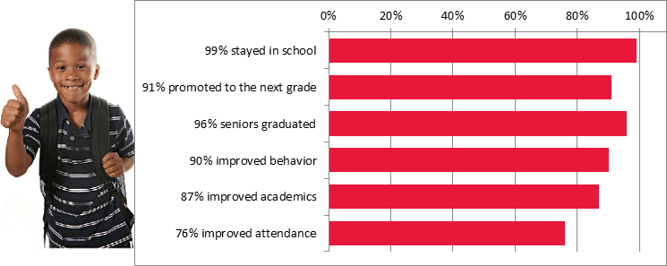

Our Data
Outcomes for Tracked CIS Students: 2017-18 School Year
Students Served
The CIS network in Florida, comprised of 8 local CIS affiliates, plays a key role in addressing the state's dropout crisis, serving 24,999 students and their families every year at 47 school and community sites. 93% of students tracked are on free and reduced-price lunch (a measure of low income) and the majority of partner schools are Title I. The ethnic breakdown of tracked students is 72% Black, 14% White, 8% Hispanic, 3% multi-racial, and 3% other. Among those students, 99% remained in school, 91% were promoted to the next grade, and 96% graduated on time.
CIS' recent five-year evaluation, the most rigorous and comprehensive evaluation of a dropout prevention program ever completed, ranks CIS as the most effective dropout prevention organization in America, and the only dropout-prevention program proven to increase on-time graduation rates. Furthermore, according to a new third-party return-on-investment study, every dollar invested in CIS' unique integrated student services model produces an average of $11.60 in economic impact for local communities.
.svg)